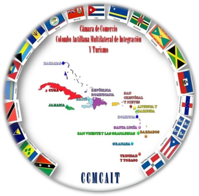

Colombia · Caribe · Antillas
Abrimos puertas entre Colombia y el Caribe
Somos el puente institucional para hacer negocios entre Colombia y 34 países y territorios del Caribe y las Antillas: verificamos a las empresas, articulamos con gobiernos y cámaras, y acompañamos cada negocio hasta el cierre.

Elija su puerta
¿Hacia dónde va su negocio?
Empresas colombianas
Quiero llevar mi empresa al Caribe
- Lectura del mercado de destino con datos verificables
- Contactos con compradores, distribuidores y gobiernos
- Acompañamiento en logística y exportación hasta el cierre
Empresas del Caribe y las Antillas
Quiero comprar o invertir en Colombia
- Proveedores colombianos verificados por la Cámara
- Agendas con gremios, regiones y entidades de gobierno
- Oportunidades de inversión con respaldo institucional
La región en cifras
Un mercado que crece y que Colombia apenas empieza a atender
Exportaciones de Colombia al Caribe
USD 1.287 millones en 2025
Esto es lo que Colombia vende hoy a los países y territorios donde trabaja la Cámara. República Dominicana concentra casi la mitad; el resto del Caribe sigue siendo, en su mayoría, un mercado por abrir.
Millones de USD. Fuente: ONU COMTRADE vía Trading Economics, datos 2025 (Trinidad y Tobago, Curazao, Turcas y Caicos, Santa Lucía e Islas Vírgenes Británicas: 2024). Puerto Rico, las dependencias francesas y Sint Maarten se reportan dentro de Estados Unidos, Francia y Países Bajos.
Qué hacemos
Del primer contacto al cierre del negocio
Exportación
Apertura de mercados, contactos comerciales y acompañamiento logístico hasta el cierre.
Ver los siete pilares →Inversión y alianzas
Conexión con socios, gobiernos y cámaras del Caribe para crecer con respaldo institucional.
Cómo lo hacemos →Turismo y gastronomía
Promoción de destinos, rutas y oferta colombiana en una región que recibe 35 millones de visitantes al año.
Agenda de eventos →Innovación y educación
Tecnología, formación y transferencia de conocimiento entre Colombia y las islas.
Ver servicios →La Cámara no trabaja con intermediarios
La CCMCAIT recibe, asesora y orienta directamente a los empresarios. Antes de abrir una puerta, verificamos a cada empresa: autenticidad, registro local, antecedentes judiciales e interés comercial real con las Antillas. Así protegemos a quien compra, a quien vende y a los gobiernos que nos reciben.
Caso de éxito
De Colombia a cinco mercados de la región
Una compañía colombiana de ciberseguridad y control de acceso, acompañada por la Cámara, ya presta servicios en Panamá, República Dominicana, México y Ecuador, y está abriendo su quinto mercado en Trinidad y Tobago.
Respaldo institucional
Articulados con quienes abren las puertas
Hacemos parte de la red de cámaras binacionales y multilaterales que operan en Colombia, con articulación activa con la Presidencia de la República, la Cancillería, las embajadas, el Ministerio de Comercio, Industria y Turismo y las gobernaciones.
Marco multilateral: AEC, CARICOM y OEACP →¿Su empresa quiere llegar al Caribe?
Cuéntenos qué vende y a qué mercado quiere llegar. Le respondemos con una ruta concreta.